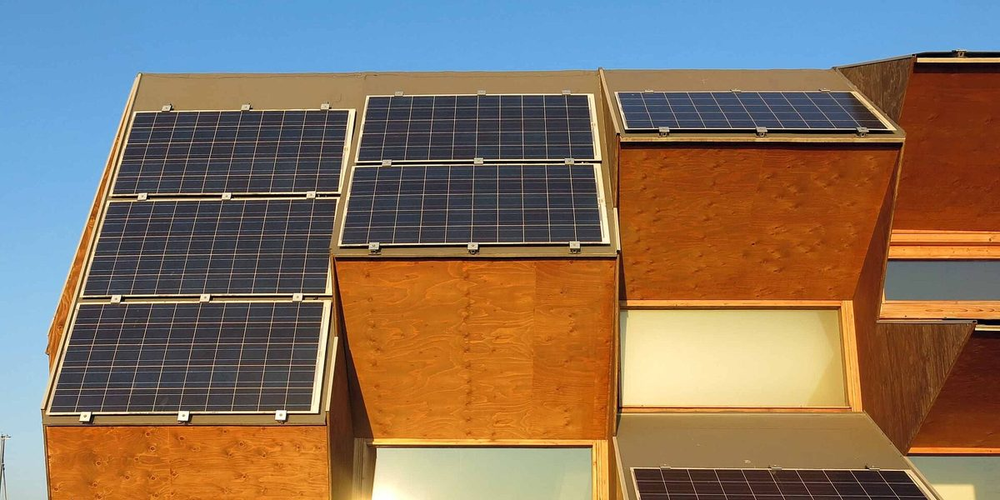

바르셀로나, 10개 구 공공건물 지붕 10곳 공동체 태양광에 내주는 공모…주민 에너지공동체들은 시범사업 넘어선 상설 정책 요구

에너지공동체 네트워크, 시의회에 종합계획·전용 기금·재산세 감면 개정 등 5대 약속 제안…지붕 공모는 11월 4일까지
스페인 바르셀로나시가 10개 구에 1곳씩, 모두 10곳의 공공시설 지붕을 공유 자가소비 태양광 용도로 빌려주는 공모를 11월 4일까지 진행하는 가운데, 시내 주민 에너지공동체들이 시범사업 위주의 지원을 넘어 상설 정책을 세우라고 요구하고 나섰다. 로카기나르다·포블레노우·본파스토르·바르셀로네타·라발 등 동네마다 생겨난 공동체의 추진 모임이 모인 '바르셀로나 에너지공동체 네트워크'는 협동조합 거점 코오폴리스(Coòpolis)가 운영하고, 에너지전환 협동조합 거점 BATEC와 환경단체·국경없는엔지니어 등이 돕는다. 네트워크는 최근 시의회 생태·도시계획 위원회와 각 정당에 ①공동체를 시 에너지전환 정책 한가운데 두는 종합계획 ②복지 서비스와 에너지 상담창구를 이어 에너지 빈곤층을 끌어안는 장치 ③설비·기술지원·포용 활동에 쓸 시 전용 기금 ④공동 소유 설비가 빠져 있는 재산세(IBI) 감면 규정 개정 ⑤부서마다 흩어진 창구를 하나로 묶은 기술 사무국 등 다섯 가지 약속을 담은 문서를 냈다. 네트워크를 돕는 단체들은 지붕 10곳 공모를 특히 반긴다면서도, 한 학교 설비의 15kW를 포블레노우 공동체에 나눠 준 사례처럼 그동안의 지원이 단발성 양도에 머물렀고 시의 태양광 보급 계획에도 공동체의 자리가 거의 없다고 지적했다. 시는 9월 22일 네트워크와 만나 공동체의 가능성에 공감하고 대화를 이어 가기로 했다며, 2024년 로카기나르다에 시 지붕을 처음 빌려준 데 이어 알폰스 코민·론다 데 달트 두 곳의 태양광 퍼걸러로 시가 직접 운영하는 공유 자가소비 서비스도 시작했다고 설명했다.
시민에너지 관점
바르셀로나는 구마다 공공건물 지붕 한 곳씩을 주민 공동체에 내주는 방식으로, 땅이 부족한 도시에서도 시민이 발전소의 주인이 될 길을 열고 있다. 도심에는 태양광을 올릴 자리가 없다는 우려가 나오지만, 학교·도서관·청사 지붕과 퍼걸러처럼 이미 공공이 가진 공간을 쓰면 새 부지 없이도 동네 발전소를 세울 수 있다. 다만 단체들이 지적하듯 지붕 몇 곳을 건별로 빌려주는 데서 멈추면 공동체는 매번 처음부터 길을 내야 하고, 전기와 수익의 주인이 되는 주민도 늘지 않는다. 국내 지자체도 공공건물·공영주차장 지붕을 주민 출자 공동체에 우선 내주는 상설 제도와 단일 창구, 전용 기금부터 갖춰야 한다.
출처: 푸블리코(Público) 2026-10-23 Aleix Camprubí 원문 보기
バルセロナ、10区の公共施設の屋根10カ所を共同体太陽光に貸し出す公募…住民のエネルギー共同体はパイロット事業を超えた恒常的な政策を要求
エネルギー共同体ネットワーク、市議会に総合計画・専用基金・固定資産税減免の見直しなど五つの約束を提案…屋根の公募は11月4日まで
スペイン・バルセロナ市が10の区に1カ所ずつ、計10カ所の公共施設の屋根を共同自家消費型太陽光の設置用に貸し出す公募を11月4日まで行うなか、市内の住民エネルギー共同体が、パイロット事業中心の支援を超えた恒常的な政策をつくるよう求めている。ロカギナルダ、ポブレノウ、ボンパストール、バルセロネータ、ラバルなど地域ごとに生まれた共同体の推進グループが集まる「バルセロナ・エネルギー共同体ネットワーク」は、協同組合の拠点コオポリス（Coòpolis）が運営し、エネルギー転換の協同組合拠点BATECや環境団体、国境なきエンジニアなどが支援している。ネットワークは最近、市議会のエコロジー・都市計画委員会と各会派に対し、①共同体を市のエネルギー転換政策の中心に据える総合計画 ②福祉サービスとエネルギー相談窓口をつなぎエネルギー貧困層を取り込む仕組み ③設備・技術支援・包摂活動に充てる市の専用基金 ④共同所有の設備が対象外となっている固定資産税（IBI）減免の見直し ⑤部署ごとに分かれた窓口を一本化する技術事務局――の五つの約束をまとめた文書を提出した。支援団体は屋根10カ所の公募を特に評価するとしながらも、ある学校の設備のうち15kWをポブレノウの共同体に分けた例のように、これまでの支援は単発の譲渡にとどまり、市の太陽光普及計画にも共同体の居場所がほとんどないと指摘した。市は9月22日にネットワークと会合を開き、共同体の可能性で一致し対話を続けることにしたと説明し、2024年にロカギナルダで市の屋根を初めて貸し出したのに続き、アルフォンス・コミンとロンダ・デ・ダルトの2カ所の太陽光パーゴラを使って市が直接運営する共同自家消費サービスも始めたとしている。
市民エネルギーの視点
バルセロナは区ごとに公共施設の屋根を1カ所ずつ住民の共同体に貸し出すことで、土地の乏しい都市でも市民が発電所の持ち主になる道を開こうとしている。都市部には太陽光を載せる場所がないという懸念もあるが、学校や図書館、庁舎の屋根、パーゴラのようにすでに公共が持つ空間を使えば、新たな用地なしでも地域の発電所をつくれる。ただ、団体が指摘するように屋根を数カ所ずつ個別に貸すだけで終われば、共同体は毎回一から道を切り開かねばならず、電気と収益の持ち主となる住民も増えない。韓国の自治体も、公共施設や公営駐車場の屋根を住民出資の共同体に優先して貸し出す恒常的な制度と一本化した窓口、専用基金をまず整えるべきだ。
出典: プブリコ（Público） 2026-10-23 Aleix Camprubí 原文を読む
巴塞罗那公开招募10个区各一处公共建筑屋顶用于社区光伏…居民能源社区要求超越试点项目的长期政策
能源社区网络向市议会提出综合规划、专项基金、修订房产税减免等五项承诺…屋顶招募截至11月4日
西班牙巴塞罗那市正在进行一项截至11月4日的公开招募，在全市10个区各选一处、共10处公共设施屋顶，出借用于共享自用光伏；与此同时，市内的居民能源社区要求市政府超越以试点为主的支持方式，建立长期政策。由Rocaguinarda、Poblenou、Bon Pastor、Barceloneta、Raval等各街区能源社区推动小组组成的“巴塞罗那能源社区网络”，由合作社中心Coòpolis负责运营，能源转型合作社中心BATEC、环保团体和无国界工程师等提供协助。该网络近日向市议会生态与城市规划委员会及各党团提交文件，提出五项承诺：一是把能源社区置于市能源转型政策核心的综合规划；二是连接社会福利服务与能源咨询窗口、把能源贫困家庭纳入其中的机制；三是用于设施、技术支持和包容活动的市级专项基金；四是修订目前把共同所有设施排除在外的房产税（IBI）减免规定；五是把分散在各部门的窗口合而为一的技术办公室。协助该网络的团体表示特别欢迎10处屋顶的招募，但也指出，正如把一所学校设施中的15kW分给Poblenou社区那样，过去的支持停留在一次性的转让，市里的光伏推广计划中也几乎没有能源社区的位置。市政府则表示，9月22日已与该网络会面，双方都认同能源社区的潜力并同意继续对话；继2024年首次把市属屋顶出借给Rocaguinarda之后，市里还利用Alfons Comín和Ronda de Dalt两处光伏凉棚，启动了由市政府直接运营的共享自用服务。
市民能源视角
巴塞罗那以每个区出借一处公共建筑屋顶给居民社区的方式，在土地紧缺的城市里也为市民成为发电站主人开辟了道路。有人担心市中心没有安装光伏的地方，但只要利用学校、图书馆、政府办公楼屋顶和凉棚等公共部门已有的空间，不需要新用地也能建起街区电站。不过正如这些团体所指出的，如果只是逐个出借几处屋顶，社区每次都得从头摸索，成为电力和收益主人的居民也不会增加。韩国地方政府也应首先建立把公共建筑和公营停车场屋顶优先出借给居民出资社区的长期制度，并配套统一窗口和专项基金。
来源: Público 2026-10-23 Aleix Camprubí 查看原文
Barcelona offers 10 public roofs, one in each district, for community solar as residents' energy communities call for a permanent policy beyond pilot projects
Energy community network presents city council with five commitments including a master plan, a dedicated fund and a property tax rebate overhaul; roof call open until November 4
Barcelona city council is running a call until November 4 to lend the roofs of 10 public facilities, one in each of the city's 10 districts, for shared self-consumption solar, while the city's neighbourhood energy communities are pressing it to move beyond pilot-based support and set a permanent policy. The Barcelona Energy Communities Network, which brings together the driving groups of communities in neighbourhoods such as Rocaguinarda, Poblenou, Bon Pastor, Barceloneta and Raval, is run by the cooperative hub Coòpolis and supported by BATEC, a cooperative hub for the energy transition, along with an environmental group and Engineers Without Borders. The network recently sent the council's ecology and urban planning committee and the municipal groups a document with five commitments: a master plan putting communities at the centre of municipal energy transition policy; a link between social services and energy advice points so that households in energy poverty are included; a dedicated municipal fund for installations, technical support and inclusion work; a revision of property tax (IBI) rebates that currently leave out shared ownership; and a technical office acting as a single window in place of scattered departments. The supporting organisations said they especially welcome the call for 10 roofs, but noted that support so far has consisted of one-off transfers, such as 15kW from a school installation shared with the Poblenou community, and that communities have little place in the city's solar rollout plans. The city said it met the network on September 22, that both sides agreed on the potential of energy communities and would keep talking, and that after first lending a municipal roof to the Rocaguinarda community in 2024 it has also launched a city-run shared self-consumption service using two solar pergolas at Alfons Comín and Ronda de Dalt.
Citizen Energy View
By lending one public roof per district to residents' communities, Barcelona is opening a path for citizens to own power plants even in a city short of land. Some worry there is no room for solar in dense urban areas, but schools, libraries, council buildings and pergolas the public already owns can host neighbourhood power plants without any new sites. As the organisations point out, though, if the city stops at lending a few roofs case by case, each community has to clear the path from scratch and the number of residents who own the electricity and the income will not grow. Korean local governments should likewise start with a standing scheme that gives resident-funded communities first claim on the roofs of public buildings and public car parks, backed by a single window and a dedicated fund.
Source: Público 2026-10-23 Aleix Camprubí Read the original